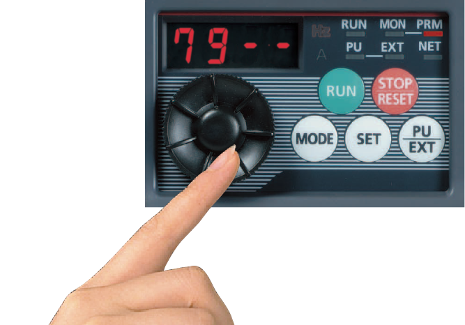
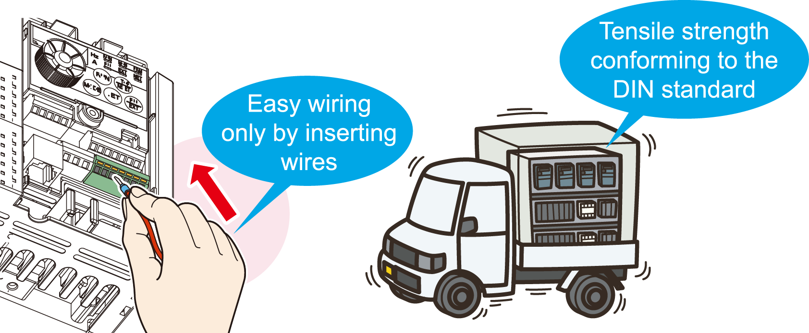

Inverters-FREQROL-F Series -FREQROL-F700PJ- Easy Operation and Maintenance

Quick setting using the setting dial
- The adaptable scroll speed setting dial allows for quick jumps or precise increments based on turning speed.
- The non-slip treatment was applied to the setting dial for easier turning.

Automatic parameter setting for specific applications
- Simple parameter setting (Pr.79 Operation mode selection)
- Communication setting for Mitsubishi HMI (GOT)
- Rated frequency change (60Hz → 50Hz)
Spring clamp terminals (control circuit terminals)
Spring clamp terminals*1 are adopted as control circuit terminals. Spring clamp terminals are highly reliable and can be easily wired.
*1The control circuit terminals are screw terminals.

Longer life parts
- The service life of the cooling fans is now 10 years*2. The service life can be further extended by ON/OFF control of the cooling fan.
- Capacitors with a design life of 10 years*2*3 are adapted. (Surrounding air temperature of 105°C for 5000 hours). With these capacitors, the service life of the inverter is further extended.
- *1Surrounding air temperature : Annual average of 40°C (free from corrosive gas, flammable gas, oil mist, dust and dirt).
The design life is a calculated value and is not a guaranteed product life. - *2Output current : 80% of the inverter rating.
The leading-edge life diagnosis function
- The degree of deterioration of the main circuit capacitor, control circuit capacitor, and inrush current limit circuit can be diagnosed on the monitor.
- Using the self-diagnosis function, the part life warning*4 can be output. With these warnings, the self-diagnosis function prevents troubles from occurring.
- *4A warning is output when any of the main circuit capacitor, control circuit capacitor, inrush current limit circuit, and cooling fan reaches its specified output level.
Enhanced communication function
- The Mitsubishi inverter protocol and MODBUS®RTU are selectable.
- The speed of RS-485 communication has been improved.
(Communication at 38.4kbps is available.)